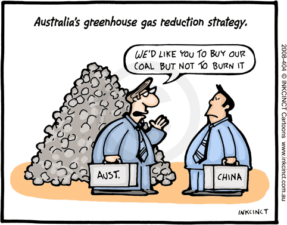

This piece was written for the AFR as a longish op ed. It hung around on account of it being hard to squeeze in as offshore financial systems melted down and as interest rates in Australia melted up. But I'm glad it's out. A month or so having passed between its having been written and it appearing, I was able to read it with a bit of distance and thought it was quite good. So with that little teaser Troppodillians, here is the piece which appeared today.
Caught in a diabolical dilemma on climate change.
Though it was merely for the UK Government, Sir Nicholas Stern's report highlighting the economics of climate change had a huge global impact.
It was a portent of things to come in the greenhouse debate. The economists are coming! And not before time. The UN sponsored negotiations have not just been tortuous perhaps inevitably so, given the stakes and complexity of the issues but highly confused.
Thus we spent years deciding whether emissions trading was a loophole or not. As if weve got the luxury of forswearing economic efficiency in facing the greatest challenge to international political economy theres ever been.
Economists and economic objectives were instrumental in designing another international institution, the WTO. Partly as a result, its almost the only international body whose members can be forced to independent arbitration and so deliver on their agreements. Even the normally unilateralist US!
Compare that with the UN Framework Convention on Climate Change (UNFCCC). UN countries are equal parties. No prizes for guessing how they vote to share the costs. An overwhelming majority vote for a small minority of rich countries to bear the costs. The transition to genuinely global action, the urgent need for real engagement from China and India, is now bogged down. Developing countries act as a block to stymie those among their number who threaten to break out of the North/South finger pointing to cut a win-win deal with the West.
Theres lots wrong with economics, but from Adam Smith on, its been the only game in town if you want to think systematically about the economy. When economists look at the immense task before us they are united in understanding that
- Trade in carbon credits isnt a loophole its a lifeline.
- Fully engaging the developing countries is urgent.
- No political settlement will endure without basic fairness to all and the only compelling way to deliver that is to transition to allocating emission entitlements according to population treating everyone everywhere equally.
- That would provide generous compensation to developing countries for coming into the system. It would even allow them to continue expanding emissions (as we reduce ours). But the need to compensate poorer countries to take action is never an argument for them to delay action. We might want to compensate for hardship, but imagine us exempting the poor from water restrictions!
So its great news that economist Ross Garnaut is now preparing a report on the climate challenge for Australia. Hes one of our best strategic thinkers and was an architect of Australias trade reform. A recent speech indicates that he's already feeling his way towards a deep command of his new subject, its dilemmas and possibilities.
After the alarmism of the scientists and the moralism of the greenies as necessary as they've been to getting where we are now, Garnaut will focus on the economic task ahead. But its already clear he's doing so, as he should, in the context of international political economy.
He's already explained the diabolical problem were in. We're in the mother of all prisoners' dilemmas. A prisoners' dilemma occurs when two or more people (or in this case countries) need to co-operate, but each faces strong incentives to cheat or somehow free ride on others.
That's the situation each country is in as it negotiates its target. So as Garnaut has explained, that's the preeminent political obstacle that must be solved. This requires some thinking beyond the Stern report, and if Garnaut does it well, as he will, he can have as much global impact this year as Stern had in 2006.
Here are some standout principles which must emerge:
- First, Australia, like other countries, should be unashamed of conditionality. Garnaut's reference to our problem as a repeated prisoners dilemma shows us the way out. Our own preparedness to act should be conditional on others preparedness not to free ride on others.
- Second, conditionality is still not enough. It must be generous conditionality. If everyone says they're prepared to do the dishes if others do, but then waits till someone else starts, they never get done. Since Australia will be one of the worst losers from global warming or perhaps just because we've always been one of the least cynical of nations (I'm speaking relatively here) and, in any event doing the right thing feels better than the alternative, we should indicate our willingness to be amongst the top quartile of countries in our preparedness to bear per capita economic burdens.
- Third, as the WTO experience illustrates, political negotiation of individual targets country by country will ultimately degrade as each country strives to free ride on others. Perhaps the global target will always require political negotiation, but countries should agree on principles for allocating global emissions rights between them and then have them determined technocratically by an independent international body as for instance disputes are arbitrated within the WTO, not by the countries directly, and as the states in our federation have their grants determined by the Grants Commission, not by the government of the day.
And I'd do something else in the wake of the Garnaut Report to help get this kind of strategic thinking centre stage.
Given its newfound cachet, Australia has a real capacity to lead, as we did in Bali. As was the case with the Canberra Commission on nuclear disarmament in the 1990s, a talk shop, if it comprises sufficiently eminent talkers can be very influential.
We should bring together eminent economists from around the world, each asked to represent the interests of their own country. A new Canberra Commission. They'd meet with a view to forging a consensus on how to move forward. My guess is that the moralising would be dropped. Rather than striking poses and appealing to whatever populist arguments might get the right headlines or excuse free riding by their own country, the delegates would thrash out the principles on which we could reasonably ask for global engagement from all countries.
I could say that the future of the world depends upon it.
Actually, it does. But no amount of enthusiasm, no amount of moralising, no amount of heat will get us far without a hard-headed economic framework, or more particularly, the light it can shed on the pathway out of our diabolical dilemma.
Very good.
I think we're a fair way off still. I wonder how long we can wait. I don't share your view that we've been amongst the least cynical, but maybe I'm conditioned by the last eleven years of Federal government.
How do we allocate for population properly? Population as at 1990?
Nitpicks: economists fingers were all over the Kyoto Protocol (and a good thing too); cachet not cache; calling scientists alarmist sounds negative, and dismissive, but it appears they have been overcautious in many predictions.
Thanks Nick: another excellent post. BTW, I'm interested in your views on the PC's recent piece on Stern. Quiggin liked the analysis, but it unfortunately, though perhaps not unforeseeably, got misreported as an 'economists sceptical of greenhouse effect' piece. Any thoughts? Tom
Wilful - yes, 'alarmism' is ambiguous. I didn't mean to suggest that calling the alarm is necessarily 'alarmist' in the pejorative sense. But I think you're right - a different word would have been better. (I was happy with the ambiguity regarding the greenies ;). On how to allocate for population, I'm not fussed though some argue you don't want to create incentives to populate. They're negligible in the developed world, but if you want, I don't have a problem with freezing the per capita denominator at some period - perhaps 2010 would be best - but it's a detail.
Hi Tom, I presumed that if the PC piece were to be inadequate in some way, it would be a way that John Quiggin would react to. Given his praise of the work, I haven't checked it out - though will do so if I need to delve into the pure rate of time preference stuff. I liked what Dani Rodrik said on it recently himself quoting another. Or to put it more guardedly, I think I like it. I'd have to read and think and talk a fair bit more about it before I was confident. It's a tricky area - methodologically and philosophically.
Then again there is a part of me that comes from the Groucho Marx school of time preference. "What has posterity ever done for me?" I'm thinking that if posterity enjoys standards of living twice, ten a hundred times mine (depending on which bit of posterity we're thinking about), is it really so wrong of me to snaffle a bit of its loot? So in short, I have no great problem with a higher discount rate than Stern if the tradeoff is purely economic. I might even go so far as a commercial discount rate. But of course there's more to it than that. The economic costs come with irreversible environmental changes, and I'd be happy to sacrifice a fair bit not to cause them.
Thanks Nic. I agree with the economics and the judgments you make, though I was really more interested in the positioning of economists in this debate. They run a risk, I think, of being lumped in with the greenhouse sceptics for raising issues of cost, appropriate trade-offs between action now versus getting more information, and appropriate intergenerational trade-offs.
Yes, some anti-economist called Davies was arguing that we need more scientists and fewer economists to be involved. I think we've got quite enough scientists. Hayek is good at anatomising scientists' 'planning' bias. The idea that if you have a problem you engineer a solution. Of course that sounds commonsensical but as Hayek explained, you need to do the engineering in a piecemeal way with some understanding of the stuff you're dealing with - and respect for the market's distributed intelligence and the concomitant likelihood that, if you don't consider these things, inefficiencies and unanticipated consequences will stuff things up.